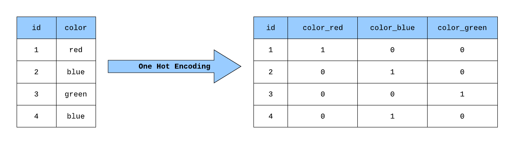

데이터 전처리
Table of contents
Feature Scaling
: 입력 변수(feature)의 크기를 조정(scale)해서 일정 범위 내에 떨어지도록 바꿔주는 것.
- 서로 다른 단위와 범위를 갖는 입력변수들을 활용해서 machine learning을 할 때, 더 큰 값들을 갖는 변수가 갖는 영향이 과다하게 나타나는 것을 막으려면 Feature Scaling을 해줘야 한다
- ex) 키와 몸무게 변수를 사용할 때, feature scaling을 하지 않으면 키 변수의 중요성이 과다하게 나타날 수 있다
- Feature Scaling은 경사하강법을 더 빨리 할 수 있도록 해준다
- 더 빨리 최소점을 찾을 수 있기 때문에 Maching Learning에서의 모델 학습이 빨라진다
Min-Max Normalization (최소-최대 정규화)
: 가장 흔한 정규화 방법. 데이터의 크기를 0과 1사이로 바꿔주는 것. (최솟값 → 0, 최댓값 → 1)
- $ X_{new} = \dfrac{X_{old} - X_{min}}{X_{max} - X_{min}} $
- 새로운 값 = (원래 값 - 최솟값) / (최댓값 - 최솟값)
import pandas as pd
import numpy as np
from sklearn.datasets import load_boston # boston 집값 데이터
from sklearn import preprocessing
1. boston dataset을 불러옴
boston_dataset = load_boston()
boston_data = pd.DataFrame(boston_dataset.data, columns=boston_dataset.feature_names)
boston_data.head()
| CRIM | ZN | INDUS | CHAS | NOX | RM | AGE | DIS | RAD | TAX | PTRATIO | B | LSTAT | |
|---|---|---|---|---|---|---|---|---|---|---|---|---|---|
| 0 | 0.00632 | 18 | 2.31 | 0 | 0.538 | 6.575 | 65.2 | 4.09 | 1 | 296 | 15.3 | 396.9 | 4.98 |
| 1 | 0.02731 | 0 | 7.07 | 0 | 0.469 | 6.421 | 78.9 | 4.9671 | 2 | 242 | 17.8 | 396.9 | 9.14 |
| 2 | 0.02729 | 0 | 7.07 | 0 | 0.469 | 7.185 | 61.1 | 4.9671 | 2 | 242 | 17.8 | 392.83 | 4.03 |
| 3 | 0.03237 | 0 | 2.18 | 0 | 0.458 | 6.998 | 45.8 | 6.0622 | 3 | 222 | 18.7 | 394.63 | 2.94 |
| 4 | 0.06905 | 0 | 2.18 | 0 | 0.458 | 7.147 | 54.2 | 6.0622 | 3 | 222 | 18.7 | 396.9 | 5.33 |
2. describe()로 각 변수의 분포를 확인: max값과 min값이 제각각임을 확인 가능
boston_data.describe()
| CRIM | ZN | INDUS | CHAS | NOX | RM | AGE | DIS | RAD | TAX | PTRATIO | B | LSTAT | |
|---|---|---|---|---|---|---|---|---|---|---|---|---|---|
| count | 506 | 506 | 506 | 506 | 506 | 506 | 506 | 506 | 506 | 506 | 506 | 506 | 506 |
| mean | 3.61352 | 11.3636 | 11.1368 | 0.06917 | 0.554695 | 6.28463 | 68.5749 | 3.79504 | 9.54941 | 408.237 | 18.4555 | 356.674 | 12.6531 |
| std | 8.60155 | 23.3225 | 6.86035 | 0.253994 | 0.115878 | 0.702617 | 28.1489 | 2.10571 | 8.70726 | 168.537 | 2.16495 | 91.2949 | 7.14106 |
| min | 0.00632 | 0 | 0.46 | 0 | 0.385 | 3.561 | 2.9 | 1.1296 | 1 | 187 | 12.6 | 0.32 | 1.73 |
| 25% | 0.082045 | 0 | 5.19 | 0 | 0.449 | 5.8855 | 45.025 | 2.10018 | 4 | 279 | 17.4 | 375.377 | 6.95 |
| 50% | 0.25651 | 0 | 9.69 | 0 | 0.538 | 6.2085 | 77.5 | 3.20745 | 5 | 330 | 19.05 | 391.44 | 11.36 |
| 75% | 3.67708 | 12.5 | 18.1 | 0 | 0.624 | 6.6235 | 94.075 | 5.18843 | 24 | 666 | 20.2 | 396.225 | 16.955 |
| max | 88.9762 | 100 | 27.74 | 1 | 0.871 | 8.78 | 100 | 12.1265 | 24 | 711 | 22 | 396.9 | 37.97 |
3. MinMaxScaler()로 normalize:
# Min-Max Normalization
scaler = preprocessing.MinMaxScaler()
normalized_data = scaler.fit_transform(boston_data)
# df로 정리해서 확인
normalized_df = pd.DataFrame(normalized_data, columns=boston_dataset.feature_names)
normalized_df.head() ## 다 0~1 사이의 값으로 바뀌었음
| CRIM | ZN | INDUS | CHAS | NOX | RM | AGE | DIS | RAD | TAX | PTRATIO | B | LSTAT | |
|---|---|---|---|---|---|---|---|---|---|---|---|---|---|
| 0 | 0 | 0.18 | 0.0678152 | 0 | 0.314815 | 0.577505 | 0.641607 | 0.269203 | 0 | 0.208015 | 0.287234 | 1 | 0.0896799 |
| 1 | 0.000235923 | 0 | 0.242302 | 0 | 0.17284 | 0.547998 | 0.782698 | 0.348962 | 0.0434783 | 0.104962 | 0.553191 | 1 | 0.20447 |
| 2 | 0.000235698 | 0 | 0.242302 | 0 | 0.17284 | 0.694386 | 0.599382 | 0.348962 | 0.0434783 | 0.104962 | 0.553191 | 0.989737 | 0.0634658 |
| 3 | 0.000292796 | 0 | 0.0630499 | 0 | 0.150206 | 0.658555 | 0.441813 | 0.448545 | 0.0869565 | 0.0667939 | 0.648936 | 0.994276 | 0.0333885 |
| 4 | 0.00070507 | 0 | 0.0630499 | 0 | 0.150206 | 0.687105 | 0.528321 | 0.448545 | 0.0869565 | 0.0667939 | 0.648936 | 1 | 0.0993377 |
4. 잘 normalize되었는지 min, max값을 확인
normalized_df.describe() ## 모든 열이 min=0, max=1로 잘 바뀜
| CRIM | ZN | INDUS | CHAS | NOX | RM | AGE | DIS | RAD | TAX | PTRATIO | B | LSTAT | |
|---|---|---|---|---|---|---|---|---|---|---|---|---|---|
| count | 506 | 506 | 506 | 506 | 506 | 506 | 506 | 506 | 506 | 506 | 506 | 506 | 506 |
| mean | 0.0405441 | 0.113636 | 0.391378 | 0.06917 | 0.349167 | 0.521869 | 0.676364 | 0.242381 | 0.371713 | 0.422208 | 0.622929 | 0.898568 | 0.301409 |
| std | 0.0966793 | 0.233225 | 0.251479 | 0.253994 | 0.238431 | 0.134627 | 0.289896 | 0.191482 | 0.378576 | 0.321636 | 0.230313 | 0.230205 | 0.197049 |
| min | 0 | 0 | 0 | 0 | 0 | 0 | 0 | 0 | 0 | 0 | 0 | 0 | 0 |
| 25% | 0.000851131 | 0 | 0.173387 | 0 | 0.131687 | 0.445392 | 0.433831 | 0.088259 | 0.130435 | 0.175573 | 0.510638 | 0.94573 | 0.14404 |
| 50% | 0.00281208 | 0 | 0.338343 | 0 | 0.314815 | 0.507281 | 0.76828 | 0.188949 | 0.173913 | 0.272901 | 0.68617 | 0.986232 | 0.265728 |
| 75% | 0.0412585 | 0.125 | 0.646628 | 0 | 0.49177 | 0.586798 | 0.93898 | 0.369088 | 1 | 0.914122 | 0.808511 | 0.998298 | 0.420116 |
| max | 1 | 1 | 1 | 1 | 1 | 1 | 1 | 1 | 1 | 1 | 1 | 1 | 1 |
Standardization (표준화)
: 데이터의 평균을 0, 표준편차를 1로 맞춰주는 것
- $ X_{new} = \dfrac{X_{old} - \bar{X}}{\sigma} $
- 새로운 값 = (원래 값 - 평균) / 표준편차
- 표준화를 한 데이터를 보통 z-score라고 한다 - ex) z-score가 1.5면 ‘평균값보다 1.5 표준편차만큼 크다’는 뜻
# 소수점 2번째 자리까지만 출력되도록 설정
pd.set_option('display.float_format', lambda x: '%.2f' % x)
# Standardization
scaler = preprocessing.StandardScaler() # MinMaxScaler와 비교했을 때, 이 한 줄만 바뀜.
standardized_data = scaler.fit_transform(boston_data) # 위에서 사용했던 boston_data df를 그대로 사용
standardized_df = pd.DataFrame(standardized_data, columns=boston_dataset.feature_names)
standardized_df.describe() ## 모든 열이 평균은 0, 표준편차는 1이 되도록 잘 표준화됨
| CRIM | ZN | INDUS | CHAS | NOX | RM | AGE | DIS | RAD | TAX | PTRATIO | B | LSTAT | |
|---|---|---|---|---|---|---|---|---|---|---|---|---|---|
| count | 506.00 | 506.00 | 506.00 | 506.00 | 506.00 | 506.00 | 506.00 | 506.00 | 506.00 | 506.00 | 506.00 | 506.00 | 506.00 |
| mean | -0.00 | -0.00 | -0.00 | -0.00 | -0.00 | -0.00 | -0.00 | -0.00 | -0.00 | -0.00 | -0.00 | -0.00 | -0.00 |
| std | 1.00 | 1.00 | 1.00 | 1.00 | 1.00 | 1.00 | 1.00 | 1.00 | 1.00 | 1.00 | 1.00 | 1.00 | 1.00 |
| min | -0.42 | -0.49 | -1.56 | -0.27 | -1.46588 | -3.88 | -2.34 | -1.27 | -0.98 | -1.31 | -2.71 | -3.91 | -1.53 |
| 25% | -0.41 | -0.49 | -0.87 | -0.27 | -0.91 | -0.57 | -0.84 | -0.81 | -0.64 | -0.77 | -0.49 | 0.21 | -0.80 |
| 50% | -0.39 | -0.49 | -0.21 | -0.27 | -0.14 | -0.11 | 0.32 | -0.28 | -0.52 | -0.46 | 0.27 | 0.38 | -0.18 |
| 75% | 0.01 | 0.05 | 1.02 | -0.27 | 0.60 | 0.48 | 0.91 | 0.66 | 1.66 | 1.53 | 0.81 | 0.43 | 0.60 |
| max | 9.93 | 3.80 | 2.42 | 3.66 | 2.73 | 3.56 | 1.12 | 3.96 | 1.66 | 1.80 | 1.64 | 0.44 | 3.55 |
카테고리 변수 인코딩
- 문자열로 구성된 카테고리 변수는 숫자형으로 변환해서 표기해야 학습할 수 있다
- Label Encoding과 One-hot Encoding 방식이 가능
- *Label Encoding: 고양이 → 1, 강아지 → 2, 너구리 → 3 이런식으로 각 카테고리를 숫자 값으로 변환해주는 방식.
- 하지만 이렇게 하면 실제로는 크고 작음이 없는 데이터인데 ML 알고리즘에서 1 < 2 이런 식으로 숫자의 크고 작음에 따라 중요도가 존재하는 것으로 인식될 가능성이 있으므로 좋은 방법은 아니다.
One-hot Encoding
- Label Encoding의 문제점을 해결해주는 인코딩 방식.
- 0과 1로 이루어진 벡터로 각 변수를 표현해준다
- ex) 고양이 → 1 0 0, 강아지 → 0 1 0, 너구리 → 0 0 1 이런식으로 나타냄
- sklearn.preprocessing의 OneHotEncoder를 사용해도 되고, pandas의
get_dummies()함수를 이용해도 쉽게 활용할 수 있다

(출처: towardsdatascience.com)
import pandas as pd
titanic_df = pd.read_csv('data/titanic.csv') ## 데이터 출처: kaggle
titanic_df.head()
| PassengerId | Survived | Pclass | Name | Sex | Age | SibSp | Parch | Ticket | Fare | Cabin | Embarked | |
|---|---|---|---|---|---|---|---|---|---|---|---|---|
| 0 | 1 | 0 | 3 | Braund, Mr. Owen Harris | male | 22 | 1 | 0 | A/5 21171 | 7.25 | nan | S |
| 1 | 2 | 1 | 1 | Cumings, Mrs. John Bradley (Florence Briggs Thayer) | female | 38 | 1 | 0 | PC 17599 | 71.2833 | C85 | C |
| 2 | 3 | 1 | 3 | Heikkinen, Miss. Laina | female | 26 | 0 | 0 | STON/O2. 3101282 | 7.925 | nan | S |
| 3 | 4 | 1 | 1 | Futrelle, Mrs. Jacques Heath (Lily May Peel) | female | 35 | 1 | 0 | 113803 | 53.1 | C123 | S |
| 4 | 5 | 0 | 3 | Allen, Mr. William Henry | male | 35 | 0 | 0 | 373450 | 8.05 | nan | S |
1. 사용할 열만 따로 가져와서 더미변수화
titanic_sex_embarked = titanic_df[['Sex', 'Embarked']] ## 사용할 열만 따로 가져옴
titanic_sex_embarked.head()
| Sex | Embarked | |
|---|---|---|
| 0 | male | S |
| 1 | female | C |
| 2 | female | S |
| 3 | female | S |
| 4 | male | S |
## pandas의 get_dummies 함수를 사용하면 쉽게 더미변수를 만들 수 있다
one_hot_encoded_df = pd.get_dummies(titanic_sex_embarked)
one_hot_encoded_df.head()
| Sex_female | Sex_male | Embarked_C | Embarked_Q | Embarked_S | |
|---|---|---|---|---|---|
| 0 | 0 | 1 | 0 | 0 | 1 |
| 1 | 1 | 0 | 1 | 0 | 0 |
| 2 | 1 | 0 | 0 | 0 | 1 |
| 3 | 1 | 0 | 0 | 0 | 1 |
| 4 | 0 | 1 | 0 | 0 | 1 |
2. one-hot encoding할 열을 따로 저장하지 않고, 기존 df에서 특정 부분만 encoding
# columns=[]로 더미변수화해줄 열을 정해주면 된다
one_hot_encoded_df = pd.get_dummies(data=titanic_df, columns=['Sex', 'Embarked'])
one_hot_encoded_df.head()
| PassengerId | Survived | Pclass | Name | Age | SibSp | Parch | Ticket | Fare | Cabin | Sex_female | Sex_male | Embarked_C | Embarked_Q | Embarked_S | |
|---|---|---|---|---|---|---|---|---|---|---|---|---|---|---|---|
| 0 | 1 | 0 | 3 | Braund, Mr. Owen Harris | 22 | 1 | 0 | A/5 21171 | 7.25 | nan | 0 | 1 | 0 | 0 | 1 |
| 1 | 2 | 1 | 1 | Cumings, Mrs. John Bradley (Florence Briggs Thayer) | 38 | 1 | 0 | PC 17599 | 71.2833 | C85 | 1 | 0 | 1 | 0 | 0 |
| 2 | 3 | 1 | 3 | Heikkinen, Miss. Laina | 26 | 0 | 0 | STON/O2. 3101282 | 7.925 | nan | 1 | 0 | 0 | 0 | 1 |
| 3 | 4 | 1 | 1 | Futrelle, Mrs. Jacques Heath (Lily May Peel) | 35 | 1 | 0 | 113803 | 53.1 | C123 | 1 | 0 | 0 | 0 | 1 |
| 4 | 5 | 0 | 3 | Allen, Mr. William Henry | 35 | 0 | 0 | 373450 | 8.05 | nan | 0 | 1 | 0 | 0 | 1 |